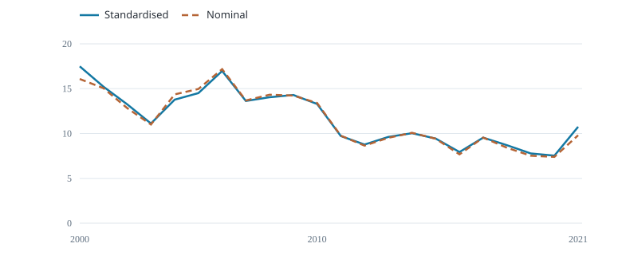

Fiji longline albacore · 2000–2021 · 132 released fleet–cell–quarter records.

Fish per 1,000 hooks
Both curves use the same selected rows; 132 used, 0 excluded; no additional effort filter.
Nominal CPUE = 1,000 × annual fish numbers / annual hooks.
B adjusts quarter only and averages predictions over the same six fixed strata. Quarter effects partly confound spatial differences on this support.
Quasipoisson GLM: year + quarter · Arithmetic mean of response-scale predictions with equal fixed stratum weights.
These released strata cover the selected fleet. No confidence intervals or stock-wide abundance validation are supplied.
| Year | Standardised (fish/1,000 hooks) | Nominal (fish/1,000 hooks) |
|---|---|---|
| 2000 | 17.49 | 16.08 |
| 2021 | 10.75 | 9.802 |